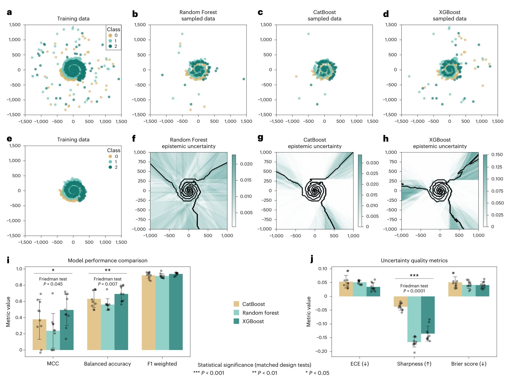
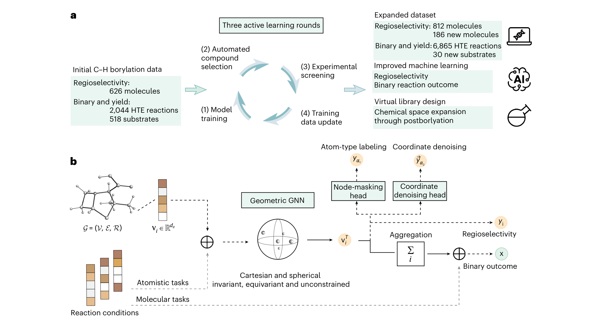
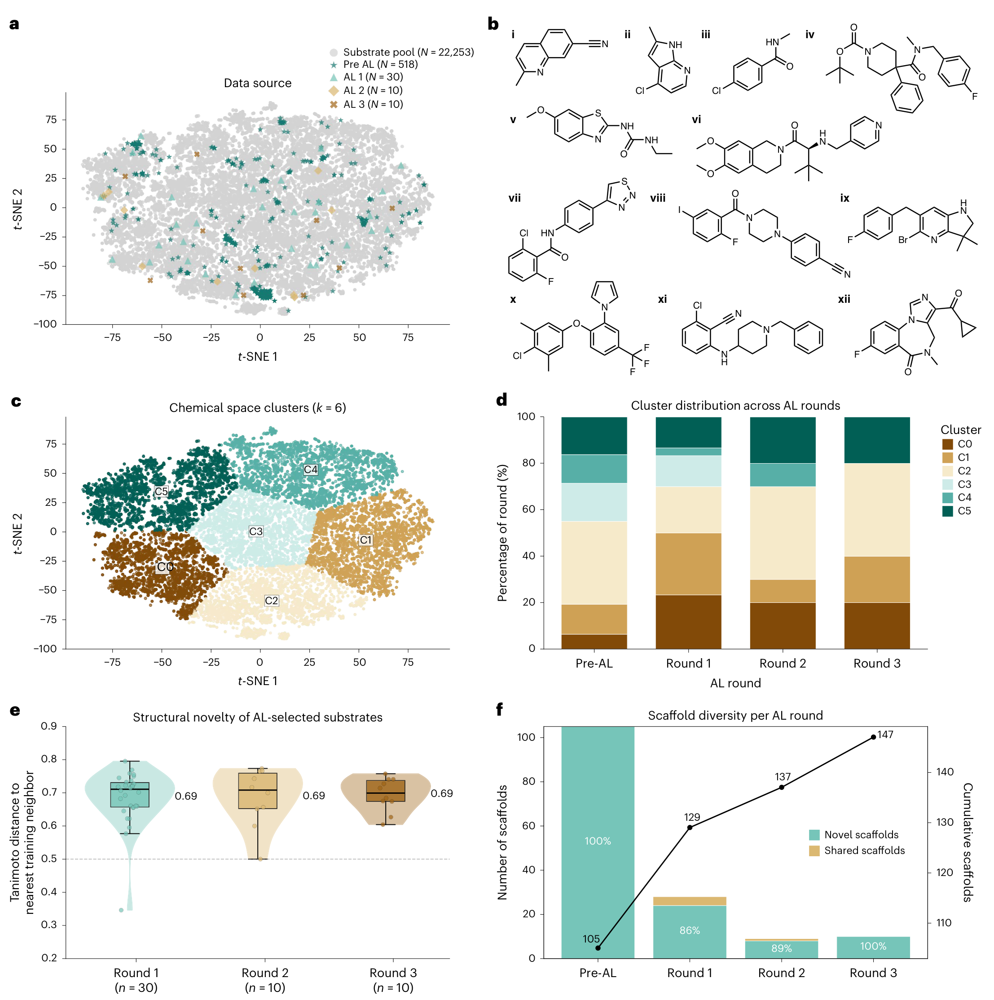
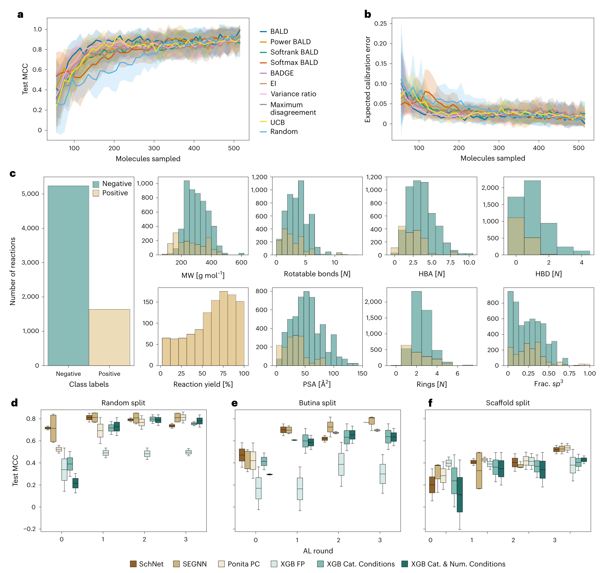
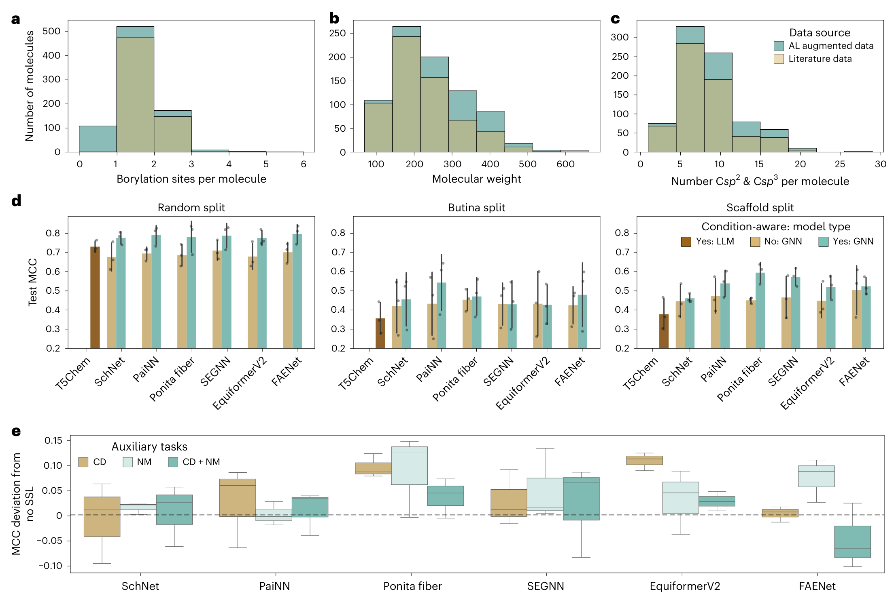
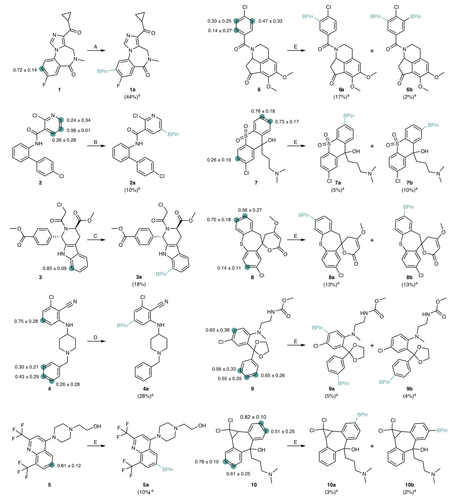
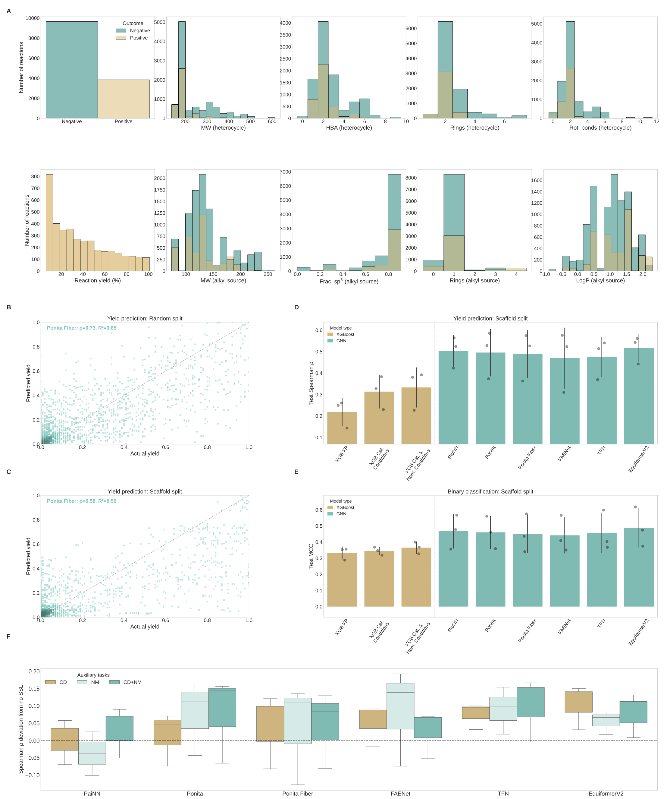

用主动学习补反应数据，再用几何深度学习预测硼化位置
论文原文 ↗Advancing chemical reaction prediction in data-scarce drug discovery with active and geometric deep learning
Mason Minot、Yannick Stenzhorn 等｜Nature Computational Science，2026｜DOI｜
分子设计模型可以提出大量候选，药物研究还需要知道怎样把它们做出来，以及怎样高效改造已有分子。C–H 硼化是一种有用的后期修饰：在复杂分子的某个 C–H 位置接入硼酸酯，再通过偶联引入新片段。预测这类反应的难点，是参考数据少、失败记录少，多个相似位点又很难区分。
作者提出一条贯通数据与预测的闭环路线：**让树模型集成选择最有信息量的实验，建立多样的硼化数据集；再用几何图神经网络及自监督任务，学习反应成败和具体硼化位置。**最后以未见复杂底物的实际反应检验位点预测。
方法怎样做：实验选择与位点预测相互衔接
主动学习从 518 个底物、2,044 条已有反应开始。底物被编码为 ECFP4 指纹，即由局部原子连接环境组成的数值表示；十个设置不同的 XGBoost 树模型据此预测底物是否能在已测条件中达到成功标准。
多个模型的判断分歧提供下一轮选样的线索。作者使用 BALD 准则，优先选择能帮助模型消除知识不确定性的底物：如果模型各自有把握、彼此结论却不同，做这个实验更有机会改变现有认识。作者比较了树模型和采样策略后，采用 XGBoost 集成与 BALD。

图2｜不同模型的预测和不确定性比较，说明集成判断如何支持实验选择。接着，模型给 Roche 可获得的 22,253 个药物样芳香分子打分，三轮分别选出 30、10、10 个新底物。每个底物测试约 96 种配体—溶剂条件，用 LC–MS 获取反应结果；对于适合分离的产物，进一步放大并通过结构表征确定硼化位置。新数据回到模型，指导下一轮实验。
这三轮实验新增 4,821 条反应，使成败数据达到 568 个底物、6,865 条反应。作者还整合文献及 Roche 的区域选择性数据，建立包含 812 个底物、920 个硼化产物的位点数据集。由此，快速筛选产生的反应标签与精细表征产生的原子位点标签，共同支持后续预测。

图1｜从模型选择实验、补充反应数据，到分子级反应成败和原子级硼化位点预测的完整流程。几何图神经网络把分子看作由原子和相互关系组成的图，同时接收三维构象。网络逐层汇集邻近原子的化学与空间信息，再用两种方式输出结果：汇总整个分子的表示，预测给定条件下能否反应；保留每个碳原子的表示，预测哪些位置会发生硼化。配体、溶剂等条件也被编码进网络，使同一底物在不同条件下对应不同输入。
有限标签之外，作者还利用分子自身的结构增加训练信号。一个辅助任务遮住原子类型，让模型恢复；另一个给坐标加入小扰动，让模型预测噪声。网络在学习反应标签的同时，还要保留足够的化学与几何信息来恢复结构，这就是本文采用的自监督训练。
主要结果：数据更丰富、模型更准确，并能定位新底物的反应位置
主动学习扩展了化学覆盖，并改善结构泛化
三轮实验引入 42 种原数据中没有的核心骨架，累计骨架数从 105 增至 147，约增加 40%。这里的骨架保留环系和连接框架，可以反映数据是否进入了新的结构家族。

图4｜候选池、逐轮底物选择及结构距离，展示新实验如何进入原先覆盖较少的区域。作者在固定测试底物上逐轮比较预测，既采用随机划分，也按结构相似性或核心骨架分组。后两种划分用来检验遇到新结构系列时的表现。在骨架划分中，最终几何网络的平均 MCC 约 0.43–0.50，最好的条件编码 XGBoost 为 0.35±0.12。MCC 综合考虑正负样本的正确与错误判断，适合反应成败分布不均衡的数据。

图3｜采样策略、数据分布及各轮反应成败预测，展示新增数据怎样进入模型训练并改善表现。三维几何、反应条件和自监督共同帮助位点判断
在区域选择性任务中，模型要区分同一分子里多个相似碳位。骨架划分下，文中的反应语言模型 T5Chem 为 0.38±0.08 MCC，Ponita Fiber 几何网络为 0.59±0.05。加入反应条件进一步改善多数比较，说明局部三维环境与条件信息能够帮助识别反应位置。
自监督辅助任务也提高了多种几何网络的表现。模型在有限反应标签上，同时利用原子类型恢复与坐标去噪学习结构规律，为小数据反应预测提供了额外训练信号。

图5｜区域选择性模型、条件编码和辅助任务的比较，说明结构信息如何转化为位点预测收益。新底物实验检验了模型给出的硼化位置
作者采用带坐标去噪训练的 EquiformerV2，对十个此前未报道的复杂底物预测，再开展反应筛选、分离和结构表征。模型为各碳位给出分数，研究者据此了解哪些位置更可能被硼化。
以一个含多个芳环的底物为例，吡啶环某位置的预测概率为 0.98±0.01，实验在该位置获得相应硼化产物。十个底物中，模型最高概率位置均与实验观察吻合；对于存在竞争位置的底物，模型也显示出多个可反应位点。这些实例展示了该流程对复杂含氮杂芳基分子修饰的实用价值。

图6｜各碳位的预测概率与实验产物相对照，将模型的原子级输出接到实际分子修饰。研究贡献
这项工作把“怎样获得更有用的数据”与“怎样训练更好的预测器”接在一起。主动学习把实验资源投向知识缺口，高通量筛选与结构表征提供反应和位点标签，几何网络再从这些数据中学习结构—条件—反应之间的联系。它同时提供了包含失败结果的硼化基准数据，以及经过新底物实验检验的预测路线。
作者还把几何建模与训练策略用于 Minisci C–H 烷基化的 13,490 条反应。在骨架划分中，几何网络改善反应成败和产率任务，自监督通常也有帮助，进一步展示了这一训练思路的可迁移价值。

扩展数据图1｜在另一类 C–H 官能团化反应中比较几何模型和辅助训练，展示方法向不同反应任务的延伸。附：完整原始摘要中文翻译
生成式分子设计的成功取决于其所产生分子的合成可及性。计算模型虽然可以帮助预测化学反应，但目前的有效性受到参考数据不足以及难以准确预测反应区域选择性的限制。为解决这一问题，我们提出一个整合的闭环工作流程，将高效的反应数据获取与高精度深度学习结合起来。我们开发了一种由树模型集成驱动的主动学习策略，以指导选择信息量最大的实验。这一系列实验产生了一个多样化的 C–H 硼化基准数据集。这个专门构建的数据集使我们得以训练和评估几何图神经网络。我们证明，为这些具有对称性感知能力的模型增加自监督辅助任务，能够持续改善反应结果预测和区域选择性预测的表现。对含有挑战性含氮杂芳基结构的未见底物开展前瞻测试，在所有实例中均准确定位了硼化位置，展示了这套工作流程对高效药物优化的实用价值。